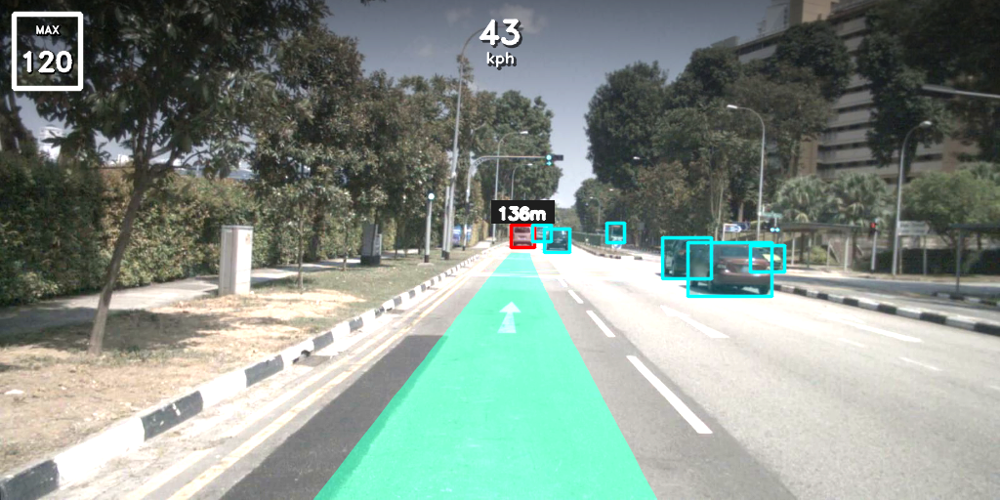

Two scripts: setup.sh once per machine, run_inference.sh per clip.
# once: apt packages, ONNX Runtime, build — see §7
cd <repo> && ./setup.sh
cd VisionPilot/scripts
./run_inference.sh scene-0796 # clean HUD window
./run_inference.sh scene-1077 -- --debug-viz # telemetry overlay
./run_inference.sh scene-0655 --fast -- --no-window # headless, no pacing
# your own footage
./run_inference.sh /path/to/dashcam.mp4 --speed-const 25Press Ctrl+C in the terminal to stop early; the run ends by itself at the
end of the clip.

scene-0796: ego speed in kph, configured
speed limit badge, green planned path corridor, detected objects in cyan, and the closest
in-path object (CIPO) in red with its distance.Takes any video path, or a bare clip name that resolves against
VisionPilot/data/nuscenes/.
| Option | Meaning |
|---|---|
--speed <file> |
Vehicle speed track: one value in m/s per frame. Default: <video>_speed.txt beside the video. |
--speed-const <m/s> |
Synthesise a constant speed track when no file exists. Default 15. |
--calib <H.yaml> |
Camera homography. Default: <video>_H.yaml beside the video, else whatever is already in config/H.yaml. |
--loop | Replay the video continuously. |
--fast | Ignore the video frame rate — run as fast as the GPU allows. |
--precision <p> |
default restores the shipped config verbatim (weights and provider), fp32 swaps only the weights, int8 also selects the tensorrt provider (see §6). |
--provider <p> |
cpu, cuda or tensorrt. |
-- <args> |
Everything after -- goes to the binary: --debug-viz (annotated telemetry overlay) or --no-window (headless). |
The script installs the chosen H.yaml into config/, regenerates the
derived C matrix, writes build/config/vision_pilot_test.conf, then execs the
binary from build/. Run ./run_inference.sh --help for the same list.
| Path | What it is |
|---|---|
| setup.sh | One-command machine setup: packages, ONNX Runtime, build. |
| VisionPilot/scripts/run_inference.sh | Run inference on any video. |
| VisionPilot/scripts/build_models.sh | Compile the TensorRT engines, one model per process. |
| VisionPilot/scripts/quantize_models.py | Regenerate the int8 weights. |
| VisionPilot/scripts/nuscenes_to_visionpilot.py | Convert nuScenes scenes into clips. |
| VisionPilot/data/nuscenes/*.mp4 | Five converted clips, 30 fps, 1600×900. |
| VisionPilot/data/nuscenes/*_speed.txt | Ego speed, m/s, one value per frame. |
| VisionPilot/data/nuscenes/*_H.yaml | Per-scene ground-plane homography. |
| VisionPilot/data/nuscenes/README.md | Short terminal-side quick reference. |
| README.md | Repo-level setup, build, configuration and troubleshooting. |
| VisionPilot/docs/nuscenes_howto.pdf | This document (source: nuscenes_howto.html). |
| Clip | Frames | Length | Mean speed | Scene |
|---|---|---|---|---|
| scene-1077 | 600 | 20.0 s | 12.6 m/s | Night, big street, high speed |
| scene-0796 | 589 | 19.6 s | 12.1 m/s | Day, big street, car overtaking |
| scene-0655 | 595 | 19.8 s | 8.2 m/s | Parking lot, bendy bus, jaywalker |
| scene-0103 | 584 | 19.5 s | 6.1 m/s | Many pedestrians, cyclist, turning car |
| scene-0061 | 576 | 19.2 s | 4.7 m/s | Construction, left turn, following a van |
The raw nuScenes v1.0-mini dataset stays outside the repo — on the reference machine at
~/vision_pilot_data/nuscenes/ (5.1 GB), together with the
v1.0-mini.tgz it came from (4.2 GB, safe to delete).
cd <repo>/VisionPilot/scripts
# the 5 fastest-moving scenes in the mini split
/usr/bin/python3 nuscenes_to_visionpilot.py \
--root ~/vision_pilot_data/nuscenes \
--out ../data/nuscenes --num-scenes 5
# specific scenes
/usr/bin/python3 nuscenes_to_visionpilot.py \
--root ~/vision_pilot_data/nuscenes \
--out ../data/nuscenes --scenes scene-0061 scene-0103Each scene produces three files. Useful flags: --fps (default 30),
--crf (x264 quality, lower is better, default 18), --bumper-offset
(rear axle → front bumper, default 3.42 m for the nuScenes Renault Zoe).
yuv420p, at the native 1600×900.ego_pose trajectory,
lightly smoothed, then interpolated onto the frame grid.K and extrinsics (R, t). For the ground plane
z = 0 in the ego frame, G = K·[Rᵀe₁ | Rᵀe₂ | −Rᵀt] maps
world (X, Y, 1) to pixels, so H = T·G⁻¹ maps pixels back
to metres, with T shifting the origin from the rear axle to the front
bumper. Convention: X forward, Y left, metres.The H matrix is not read directly by the models. At build time (and by
run_inference.sh on every run) scripts/find_homography_C_matrix.py
combines it with the fixed model-view matrix V into a C matrix, and the
preprocessor warps each frame through C into the canonical 1024×512 bird's-eye view the
networks were trained on. Getting H right is therefore what makes distances
and lane geometry line up.
Three ONNX models then run per frame — AutoDrive (two-frame: distance, curvature, CIPO flag), AutoSteer (ego path) and AutoSpeed (in-path objects) — feeding fusion, tracking and an IPOPT-based planner.
Latency pre=17.5 ms AD=23.3 ms AS=20.1 ms ASp=24.6 ms parallel=24.9 ms wall=42.3 ms 24 fps
plan: tyre=0.0017 rad accel=1.244 m/s² | cte=-0.05m | cipo=true dist=57.5 m vel=+1.00 m/sRoughly 24 fps end-to-end on this machine (the three models run concurrently, so wall time is preprocessing plus the slowest model, not their sum).
Pick the weights straight from the run script:
./run_inference.sh scene-0796 --precision default # shipped config, verbatim
./build_models.sh --precision int8 # once: compile the engines
./run_inference.sh scene-0796 --precision int8 # then just runint8 runs on TensorRT, which has to compile each model into a GPU-specific engine first.
That compile takes minutes and several GB of RAM, so it lives in
build_models.sh — run_inference.sh refuses to start when the engines
are missing and tells you to build them (--allow-build overrides). Engines are
cached, so you build once per precision.
Measured on this machine, scene-0796, 588 frames, median per-frame times with the TensorRT engines already cached:
| Setup | Wall | AutoDrive | AutoSteer | AutoSpeed |
|---|---|---|---|---|
default (fp32, cuda) | 42.0 ms | 21.9 | 20.3 | 23.7 |
int8 (int8, tensorrt) | 22.7 ms | 14.6 | 13.3 | 14.4 |
Each model runs about 1.5× faster; the wall figure moves with the GPU's thermal state (a cool-GPU fp32 run measured 29.4 ms), so call the end-to-end gain 1.3–1.8×. Accuracy holds up: the CIPO flag agrees with fp32 on 98.1% of frames, shared-target distance differs by a median of 1.1 m, and cross-track error by 0.036 m.
cd <repo>/VisionPilot/scripts
/usr/bin/python3 quantize_models.py # all three models
/usr/bin/python3 quantize_models.py --calibrate entropy # alternative rangesCalibration frames come from the bundled clips through exactly the same preprocessing as the C++ pipeline. Five properties are load-bearing — miss one of the first three and TensorRT rejects the whole graph and silently falls back to CUDA; miss one of the last two and the models load, run fast and quietly produce nonsense:
QuantizeLinear whose
zero point is not all zeros — exactly what the previously shipped uint8 weights had.QuantizeBias: False): an INT32 bias
DequantizeLinear is rejected outright.op_types_to_quantize=["Conv"]. The tail concatenates box coordinates
(0–1021 px) with class probabilities (0–1) into one tensor; quantising that Concat
gives it a single scale of ~8 and rounds every probability to zero. AutoSpeed then detects
nothing while its boxes still look plausible.onnx_engine.cpp),
or ORT rewrites the QDQ pairs before TensorRT sees them.Because those last failures are silent, verify after regenerating: build the engines, check
the log has no No graph will run on TensorRT execution provider, then run a clip
and confirm cyan detection boxes still appear. A red CIPO marker with no cyan boxes means the
scores collapsed.
Compiling all three models inside one process peaked at 13 GB of host RAM —
enough to be OOM-killed on this 16 GB laptop. build_models.sh builds one
model per process (peak near 5 GB) under a systemd memory cap:
cd <repo>/VisionPilot/scripts
./build_models.sh # int8, all three models
./build_models.sh --precision fp32 # fp32 engines
./build_models.sh --model autosteer # one model
./build_models.sh --mem-max 8G --clean # tighter cap, fresh buildIt leaves the config on the precision it built, so the next run starts in seconds.
Engines are cached in VisionPilot/trt_cache (gitignored), so they survive a
reboot; engine.cache_dir moves it, relative paths resolving against the build
directory. Avoid /tmp — systemd empties it on boot. Per-model overrides
(model.precision.autodrive and friends) let one model fall back to fp32 if its
int8 engine ever fails to build.
setup.sh at the repo root does the whole install: submodules, apt packages,
the coin-or header link, the ONNX Runtime release matching the installed CUDA toolkit, and
the CMake build. It prompts for sudo once and is safe to re-run.
cd <repo>
./setup.sh # detect the GPU, install, build
./setup.sh --cpu # no NVIDIA GPU
./setup.sh --engines int8 --verify # also build int8 engines, then smoke-test
./setup.sh --skip-apt --clean # rebuild only, touch nothing system-wideOther flags: --ort-version, --ort-root, --ort-dir,
--jobs, --webrtc, --ros2. Equivalent by hand:
sudo apt install coinor-libipopt-dev libcppad-dev \
libcudnn9-cuda-12 libcufft-12-8 libcurand-12-8
# CppAD includes <coin-or/...>; Ubuntu 22.04 ships the headers in /usr/include/coin
sudo ln -sfn /usr/include/coin /usr/include/coin-or
# ONNX Runtime 1.27.1, CUDA 12 build, unpacked to ~/onnxruntime/
cd <repo>/VisionPilot && mkdir -p build && cd build
cmake -DONNXRUNTIME_ROOT=$HOME/onnxruntime/onnxruntime-linux-x64-gpu_cuda12-1.27.1 \
-DGPU=ON -DCMAKE_BUILD_TYPE=Release \
-DCMAKE_CXX_STANDARD_LIBRARIES="-lcppad_lib" ..
make -j$(nproc)Key settings in VisionPilot/config/vision_pilot.conf:
source.mode = video, engine.provider = cuda,
model.precision = fp32, visualization_on = true,
webrtc_on = false, speed_limit = 33.3 m/s.
VisionPilot/build. That is where the scripts look for the
binary unless VP_BUILD says otherwise, and the binary resolves
config/ and modules/models/weights/ relative to its working
directory — so run it from the build tree CMake populated.
WebRTCStreamer branch in
modules/visualization/src/visualization.cpp is guarded by
#if ENABLE_WEBRTC, which CMake defines only when GStreamer, Boost.System and
nlohmann/json are all present. Without them the build still succeeds and falls back to the
local OpenCV window. On the reference machine WebRTC is off because installing
libgstreamer1.0-dev wants to remove libc++-dev /
libunwind-14-dev.
| Symptom | Cause / fix |
|---|---|
Failed to load libonnxruntime_providers_cuda.so … libcufft.so.11 |
Missing CUDA runtime library. sudo apt install libcufft-12-8 libcurand-12-8 && sudo ldconfig. |
FileInterface: read() called past end of speeds data |
Speed track shorter than the clip. Use run_inference.sh, which pads it. |
Config file not found: vision_pilot.conf |
The binary resolves config/ and modules/models/weights/ relative to the working directory — run it from build/. |
| Path/lane overlay sits at the wrong distance | H.yaml does not match the camera. Pass --calib, or calibrate with Calibration/. |
| No window appears | DISPLAY is unset over SSH. Use --no-window, or set DISPLAY=:1. |
Config file not found: autodrive_<x>.onnx |
model.precision must be fp32 or int8 (see §6). |
| A config edit has no effect | You changed config/ but the binary reads build/config/. Copy it across, or re-run cmake ... |
m/s × 3.6, and the
MAX 120 badge is speed_limit = 33.3 m/s from
vision_pilot.conf — a configured value, not a sign detection.